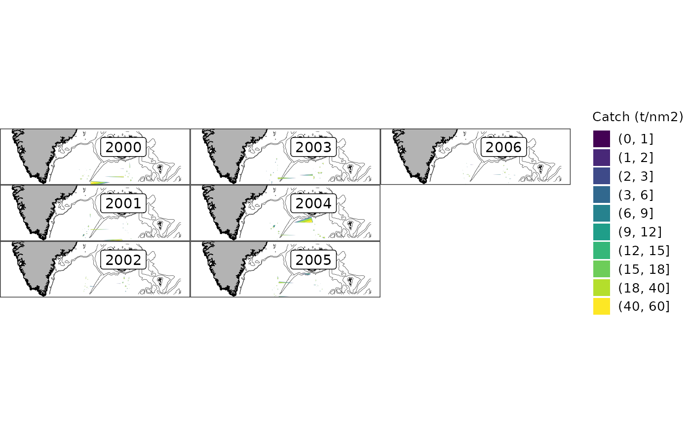

First, invent some data to use later:
logbook_fo <- expand.grid(month = 1:12, year = 2000:2006)
logbook_fo$vessel_nr <- sample(1:100, nrow(logbook_fo), replace = TRUE)
logbook_fo$mfdb_gear_code <- "LLN"
logbook_fo$lat <- round(rnorm(nrow(logbook_fo), 61.0), 3)
logbook_fo$lon <- round(rnorm(nrow(logbook_fo), -17.5), 3)
logbook_fo$catch <- runif(nrow(logbook_fo), 1e4, 1e6)
logbook_fo$tow_area <- rnorm(nrow(logbook_fo), 12, 0.6)
logbook_fo$tow_time <- rnorm(nrow(logbook_fo), 300, 10)
logbook_gl <- expand.grid(month = 1:12, year = 2000:2006)
logbook_gl$vessel_nr <- sample(1:100, nrow(logbook_gl), replace = TRUE)
logbook_gl$mfdb_gear_code <- "LLN"
logbook_gl$lat <- round(rnorm(nrow(logbook_gl), 61.0), 3)
logbook_gl$lon <- round(rnorm(nrow(logbook_gl), -30.5), 3)
logbook_gl$catch <- runif(nrow(logbook_gl), 1e4, 1e6)
logbook_gl$tow_area <- rnorm(nrow(logbook_gl), 12, 0.6)
logbook_gl$tow_time <- rnorm(nrow(logbook_gl), 300, 10)Data can be imported into a Pax DB using
pax_import():
library(pax)
# NB: pax_landings_fishingyear_summary() (pax_add_fishing_year()) calls sql()
# without dplyr::, so it fails unless dplyr is attached
library(dplyr, warn.conflicts = FALSE)
# NB: In real-life this will probably be generated using pax::pax_from_mar()
pcon <- pax::pax_connect()## duckdb keeps downloaded extensions and secrets in a temporary directory:
## ℹ /tmp/Rtmp6eWp6g/duckdb
## This is removed when the R session ends.
## • Extensions are re-downloaded each session.
## • Secrets are lost.
## ℹ Run duckdb(shared_home = TRUE) (or create ~/.duckdb) to keep them (suitable for most users).
## ℹ Run duckdb(shared_home = FALSE) to accept the temporary directory (and silence this message).
## ℹ See ?duckdb_storage for details and alternatives.
pax_import(pcon, pax_marmap_ocean_depth())## duckdb keeps downloaded extensions and secrets in a temporary directory:
## ℹ /tmp/Rtmp6eWp6g/duckdb
## This is removed when the R session ends.
## • Extensions are re-downloaded each session.
## • Secrets are lost.
## ℹ Run duckdb(shared_home = TRUE) (or create ~/.duckdb) to keep them (suitable for most users).
## ℹ Run duckdb(shared_home = FALSE) to accept the temporary directory (and silence this message).
## ℹ See ?duckdb_storage for details and alternatives.
for (s in pax_def_strata_list()) {
pax_import(pcon, pax_def_strata(s))
}## Reading layer `strata_ghl_strata' from data source
## `/home/runner/work/_temp/Library/pax/extdata/strata_ghl_strata.shp'
## using driver `ESRI Shapefile'
## Simple feature collection with 28 features and 4 fields
## Geometry type: MULTIPOLYGON
## Dimension: XY
## Bounding box: xmin: -41.17083 ymin: 61.78417 xmax: -8.2475 ymax: 68.2
## Geodetic CRS: WGS 84
## Reading layer `strata_new_strata_autumn' from data source
## `/home/runner/work/_temp/Library/pax/extdata/strata_new_strata_autumn.shp'
## using driver `ESRI Shapefile'## Warning in CPL_read_ogr(dsn, layer, query, as.character(options), quiet, : GDAL
## Message 1:
## /home/runner/work/_temp/Library/pax/extdata/strata_new_strata_autumn.shp
## contains polygon(s) with rings with invalid winding order. Autocorrecting them,
## but that shapefile should be corrected using ogr2ogr for example.## Simple feature collection with 32 features and 4 fields
## Geometry type: MULTIPOLYGON
## Dimension: XY
## Bounding box: xmin: -29.55791 ymin: 62.113 xmax: -9.328556 ymax: 68.24116
## Geodetic CRS: WGS 84
## Reading layer `strata_new_strata_spring' from data source
## `/home/runner/work/_temp/Library/pax/extdata/strata_new_strata_spring.shp'
## using driver `ESRI Shapefile'## Warning in CPL_read_ogr(dsn, layer, query, as.character(options), quiet, : GDAL
## Message 1:
## /home/runner/work/_temp/Library/pax/extdata/strata_new_strata_spring.shp
## contains polygon(s) with rings with invalid winding order. Autocorrecting them,
## but that shapefile should be corrected using ogr2ogr for example.## Simple feature collection with 32 features and 4 fields
## Geometry type: MULTIPOLYGON
## Dimension: XY
## Bounding box: xmin: -29.55791 ymin: 62.113 xmax: -9.328556 ymax: 68.24116
## Geodetic CRS: WGS 84
## Reading layer `strata_old_strata' from data source
## `/home/runner/work/_temp/Library/pax/extdata/strata_old_strata.shp'
## using driver `ESRI Shapefile'## Warning in CPL_read_ogr(dsn, layer, query, as.character(options), quiet, : GDAL
## Message 1: /home/runner/work/_temp/Library/pax/extdata/strata_old_strata.shp
## contains polygon(s) with rings with invalid winding order. Autocorrecting them,
## but that shapefile should be corrected using ogr2ogr for example.## Simple feature collection with 74 features and 4 fields
## Geometry type: MULTIPOLYGON
## Dimension: XY
## Bounding box: xmin: -30.02 ymin: 59.602 xmax: -8.689 ymax: 68.72
## Geodetic CRS: WGS 84
## Reading layer `strata_smn_strata' from data source
## `/home/runner/work/_temp/Library/pax/extdata/strata_smn_strata.shp'
## using driver `ESRI Shapefile'
## Simple feature collection with 9 features and 4 fields
## Geometry type: POLYGON
## Dimension: XY
## Bounding box: xmin: -24.4291 ymin: 63.1778 xmax: -14.13804 ymax: 66.70596
## Geodetic CRS: WGS 84
pax_import(pcon, logbook_fo, cite = "logbook_fo.csv")
pax_import(pcon, logbook_gl, cite = "logbook_gl.csv")We can list the contents:
pax_contents(pcon)## # A query: ?? x 2
## # Database: DuckDB 1.5.6 [unknown@Linux 6.17.0-1022-azure:R 4.6.1/:memory:]
## tbl_name citation
## <chr> <chr>
## 1 ocean_depth pax_marmap_ocean_depth()
## 2 ghl_strata pax_def_strata(s)
## 3 new_strata_autumn pax_def_strata(s)
## 4 new_strata_spring pax_def_strata(s)
## 5 old_strata pax_def_strata(s)
## 6 smn_strata pax_def_strata(s)
## 7 logbook_fo logbook_fo.csv
## 8 logbook_gl logbook_gl.csvBy default pax_import() will use the incoming name as
the table name. This can be overridden with the name
parameter.
We can use the imported tables as we would the mar “logbook” table:
dplyr::tbl(pcon, "logbook_gl") |>
pax_landings_fishingyear_summary()## # A query: ?? x 2
## # Database: DuckDB 1.5.6 [unknown@Linux 6.17.0-1022-azure:R 4.6.1/:memory:]
## # Ordered by: fishing_year
## fishing_year catch_kt
## <chr> <dbl>
## 1 1999/2000 3731
## 2 2000/2001 6241
## 3 2001/2002 6233
## 4 2002/2003 5277
## 5 2003/2004 5193
## 6 2004/2005 6106
dplyr::tbl(pcon, "logbook_fo") |>
pax_landings_fishingyear_summary()## # A query: ?? x 2
## # Database: DuckDB 1.5.6 [unknown@Linux 6.17.0-1022-azure:R 4.6.1/:memory:]
## # Ordered by: fishing_year
## fishing_year catch_kt
## <chr> <dbl>
## 1 1999/2000 4010
## 2 2000/2001 5711
## 3 2001/2002 4901
## 4 2002/2003 5692
## 5 2003/2004 6885
## 6 2004/2005 5950
dplyr::tbl(pcon, "logbook_gl") |>
dplyr::union_all(dplyr::tbl(pcon, "logbook_fo")) |>
pax_landings_fishingyear_summary()## # A query: ?? x 2
## # Database: DuckDB 1.5.6 [unknown@Linux 6.17.0-1022-azure:R 4.6.1/:memory:]
## # Ordered by: fishing_year
## fishing_year catch_kt
## <chr> <dbl>
## 1 1999/2000 7741
## 2 2000/2001 11952
## 3 2001/2002 11134
## 4 2002/2003 10970
## 5 2003/2004 12078
## 6 2004/2005 12056
# i.e. hr_catch_by_location()
catch_by_location <-
dplyr::tbl(pcon, "logbook_gl") |> dplyr::union_all(dplyr::tbl(pcon, "logbook_fo")) |>
dplyr::group_by(year, lat = round(lat, 1), lon = round(lon, 1)) |>
dplyr::summarise(
catch = sum(1e-3 * catch / tow_area, na.rm = TRUE),
tow_time = sum(tow_time / tow_area, na.rm = TRUE)
) |>
dplyr::ungroup()## ! Grouped output by "year" and "lat".
## ℹ Override behaviour and silence this message with the `.groups` argument.
## ℹ Or use `.by` instead of `group_by()`.
# i.e hr_catch_dist_plot()
pax::pax_map_base(plot_greenland = TRUE, plot_faroes = TRUE, xlim = c(-55, 0), ylim = c(60, 67.25)) |>
pax::pax_map_layer_depth(dplyr::tbl(pcon, "ocean_depth")) |>
pax::pax_map_layer_catch(
data = catch_by_location,
alpha = 1,
na.fill = -50,
breaks = c(0, 1, 2, seq(3, 20, by = 3), 40, 60)
)## Warning: Imputing missing values.
## Warning: Imputing missing values.
## Warning: Imputing missing values.
## Warning: Imputing missing values.
## Warning: Imputing missing values.
## Warning: Imputing missing values.
## Warning: Imputing missing values.
We can also add extra pax_import() calls into a targets
pipeline.
Before importing, the CSV file (assuming that is your data source)
should be registered with targets. This will invalidate the pipeline
steps automatically whenever the file changes. Note that the
logbook_fo target is just the path to the CSV file,
pax_import() will automatically read it in.
library(targets)
tar_dir(local({ # tar_dir() runs code from a temp dir
# Dump to file, assume that data will be stored alongside model
write.csv(logbook_fo, file = "logbook_fo.csv")
# Write _targets.R
tar_script({
library(targets)
library(pax)
list(
# Register CSV file in targets
tar_target(logbook_fo, "logbook_fo.csv", format = "file"),
# Populate local database with standard data and extras
tar_target(pax_db, {
# NB: Ideally pcon <- pax_from_mar(species, year_start, year_end)
pcon <- pax::pax_connect()
pax_import(pcon, logbook_fo, cite = "logbook_fo.csv")
pcon
}, format = pax_tar_format_duckdb()),
# Save contents of DB
tar_target(db_contents, pax_contents(pax_db), format = pax::pax_tar_format_parquet())
)
})
tar_make()
print(tar_read(db_contents))
}))## + logbook_fo dispatched
## ✔ logbook_fo completed [0ms, 7.36 kB]
## + pax_db dispatched
## duckdb keeps downloaded extensions and secrets in a temporary directory:
## ℹ /tmp/Rtmp06bpPx/duckdb
## This is removed when the R session ends.
## • Extensions are re-downloaded each session.
## • Secrets are lost.
## ℹ Run duckdb(shared_home = TRUE) (or create ~/.duckdb) to keep them (suitable for most users).
## ℹ Run duckdb(shared_home = FALSE) to accept the temporary directory (and silence this message).
## ℹ See ?duckdb_storage for details and alternatives.
## ✔ pax_db completed [1.6s, 1.06 MB]
## + db_contents dispatched
## duckdb keeps downloaded extensions and secrets in a temporary directory:
## ℹ /tmp/Rtmp06bpPx/duckdb
## This is removed when the R session ends.
## • Extensions are re-downloaded each session.
## • Secrets are lost.
## ℹ Run duckdb(shared_home = TRUE) (or create ~/.duckdb) to keep them (suitable for most users).
## ℹ Run duckdb(shared_home = FALSE) to accept the temporary directory (and silence this message).
## ℹ See ?duckdb_storage for details and alternatives.
## ✔ db_contents completed [10ms, 566 B]
## ✔ ended pipeline [2.1s, 3 completed, 0 skipped]
## tbl_name citation
## 1 logbook_fo logbook_fo.csv